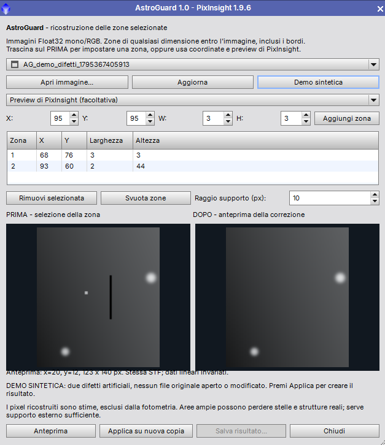

Automazioni su misura
Operazioni ripetitive, comandi e flussi da semplificare. Script Python e PowerShell progettati per il tuo ambiente.
Automatizziamo un’attivitàSVILUPPO RAPIDO. SCRIPT SU MISURA.
Creo script e automazioni che mettono il codice al lavoro per te. Partiamo dal tuo obiettivo e arriviamo a uno strumento costruito intorno al tuo modo di lavorare.
Obiettivi chiari. Tempi concordati. Codice da usare.
# Un compito ripetitivo, automatizzato.
from pathlib import Path
cartella = Path("./documenti")
for file in cartella.iterdir():
organizza(file)
aggiorna_report(file)$ Pronto per il tuo prossimo compito.
Demo illustrativa: nessun file del visitatore viene eseguito o modificato.
COSA POSSIAMO COSTRUIRE
Uno strumento piccolo può fare una grande differenza. Scegli il punto di partenza: il resto lo definiamo sul tuo caso.
Operazioni ripetitive, comandi e flussi da semplificare. Script Python e PowerShell progettati per il tuo ambiente.
Automatizziamo un’attivitàStrumenti PJSR personalizzati, interfacce e flussi per l’astrofotografia. Test di funzionamento e demo live insieme in videocall prima della consegna.
Guarda AstroGuardCollega servizi e strumenti che usi già. Integrazioni, assistenti e automazioni AI con un obiettivo concreto.
Colleghiamo gli strumentiOrganizza cartelle, trasforma CSV e JSON, raccogli dati e genera report. Un flusso chiaro, ripetibile e documentato.
Mettiamo ordine nei datiUN PROGETTO REALIZZATO
Un mio script su misura per PixInsight: un’interfaccia dedicata per selezionare zone dell’immagine, vedere l’anteprima della correzione e applicarla su una nuova copia.
Nell’immagine: AstroGuard 1.0 con una demo sintetica di un punto e una striscia artificiali. I pixel ricostruiti sono stime, non nuovi dati scientifici.
Vorrei uno strumento simile
COME LAVORO
Rapidità significa partire bene: obiettivo, ambiente e risultato atteso. Così il codice risolve il problema giusto.
Iniziamo dal tuo obiettivoDescrivi l’attività, lo strumento che usi e il risultato desiderato. Un esempio aiuta a partire.
Concordiamo funzionalità, priorità e verifiche. Lo sviluppo segue il caso d’uso, con uno scope chiaro.
Codice, indicazioni per usarlo e risultati delle verifiche effettuate nell’ambiente concordato.
Il software dovrebbe adattarsi a te.
Il tuo prossimo script può iniziare da qui.
DUE COSE DA SAPERE
Qualche dettaglio utile prima di partire.
Ti basta descrivere il problema e il risultato che cerchi. La scelta del linguaggio, del flusso e dell’interfaccia fa parte della progettazione.
Dipende dalla complessità, dall’ambiente e dalle integrazioni. Definiamo tempi e priorità dopo il brief: l’obiettivo è arrivare rapidamente a uno strumento utile, con verifiche adeguate.
Il preventivo dipende dalle funzionalità richieste e dal lavoro necessario. Il primo passo è capire bene il tuo caso e concordare lo scope prima dello sviluppo.
Sì: descrivi il comportamento attuale, gli errori o le modifiche desiderate. Per iniziare basta spiegare il problema, senza includere credenziali o dati riservati.
Compila il modulo con la tua idea e un indirizzo email valido: la richiesta viene inoltrata a mikforlani@gmail.com, così posso risponderti. Non serve un account GitHub. Puoi anche scrivermi direttamente via email.
IL PROSSIMO SCRIPT È IL TUO
Raccontami la tua idea e lascia la tua email: riceverò la richiesta direttamente nella mia casella e potrò ricontattarti.
La tua richiesta non viene pubblicata. Descrivi l’obiettivo senza inserire password, chiavi API o dati riservati.
mikforlani@gmail.comAnteprima locale: per inoltrarla usa «Invia richiesta via email» nel modulo.